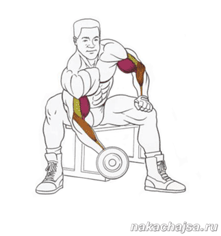

Помощь
Упражнения
Концентрированный подъем на бицепс:
Концентрированный подъем на бицепс это упражнение качает середину и низ бицепса.
Техника выполнения упражнения:
Сядьте на скамью, расставьте ноги широко, возьмите гантель в правую руку, слегка наклонитесь вперед. Упритесь локтем в внутреннюю часть бедра правой ноги возле колена. Левой рукой (ладоней) упритесь в левое бедро. Сделайте глубокий вдох и начинайте сгибать руку в локте поднимая гантель вверх, рука должна сгибаться тока в локте. В конце подъема выдыхаете и плавно медленно разгибайте руку (возвращая ее в исходное положение). И так повторяйте. Затем берете гантель в левую руку и аналогично делаете также, тока упираете локоть в другое бедро. Так делаеться упражнения концентрированный подъем на бицепс.